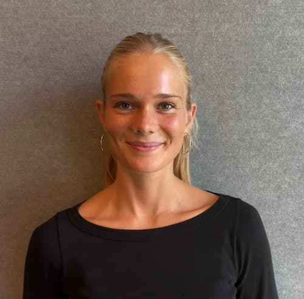
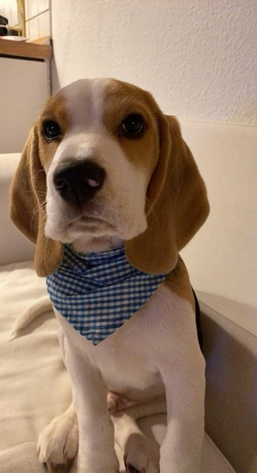

Jeg er 23 år og bor i København. Jeg er en meget social person, som elsker at være sammen med mennesker og møde nye mennesker.
En lidt random ting ved mig er, at jeg har en rigtig god hukommelse og jeg kan huske detaljer fra lang tid tilbage. Jeg elsker dyr og går meget op i, at alle dyr bliver behandlet godt. Til gengæld har jeg en stor araknofobi, som jeg prøver at arbejde med.
Min største drøm lige nu er at gennemføre mit marathon og få en rigtig god karriere bygget op gennem min uddannelse.
Jeg er målrettet og stædig og jeg elsker at udfordre mig selv både på det personlige plan og i hverdagen. Lige nu er min største udfordring, at løbe et marathon i Maj, og når det er gennemført, skal jeg nok finde en ny udfordring. Jeg er vild med mode og jeg elsker at shoppe. Jeg holder også meget af film og musik. Når det kommer til mad, er jeg ret god i et køkken, og jeg elsker at prøve nye retter og udfordre mig selv med madlavning.
Det var lidt om mig

Han hedder Carlo og han er mit et og alt!

Email: Liwi1001@stud.ek.dk
Telefonnummer: +45 23 30 38 09